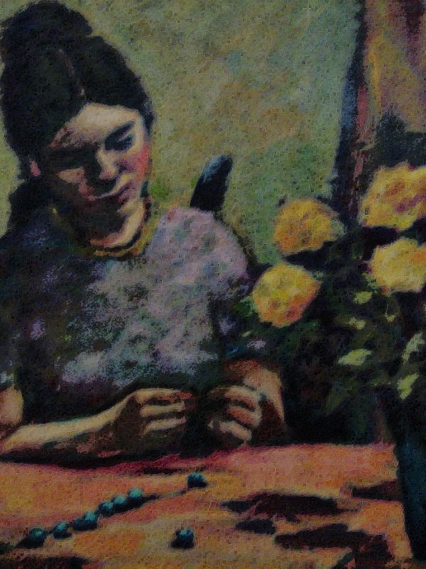

If you’ve stumbled upon this site and you don’t document your code in Middle High German, then you’ll probably be confused. I hope to have everything together in a week or so, and then I’ll start putting out more text than interesting pictures.
This entry was posted on Tuesday, March 3rd, 2009 at 8:11 PM and is filed under Art. You can follow any responses to this entry through the RSS 2.0 feed. Both comments and pings are currently closed.